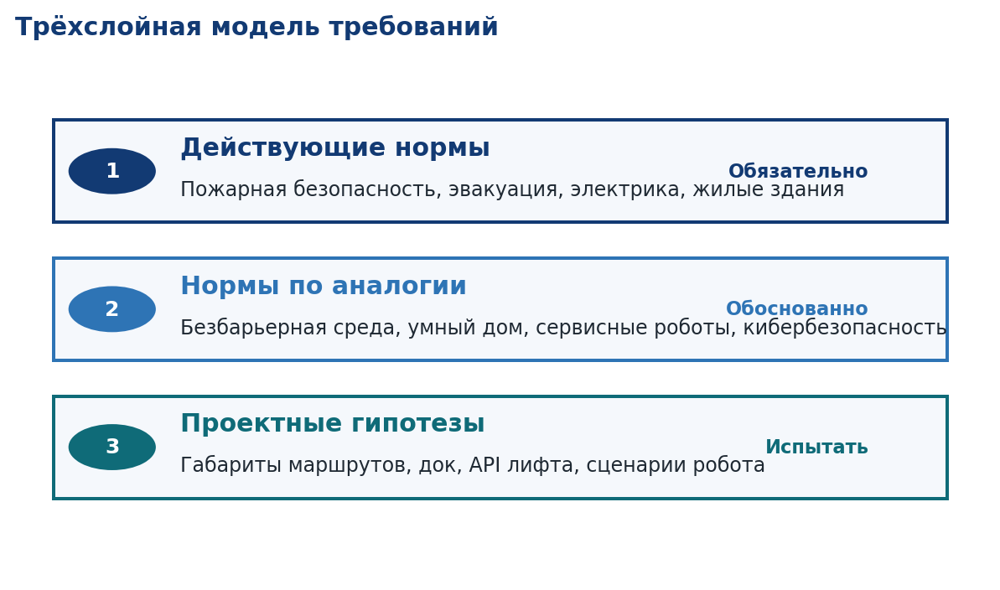
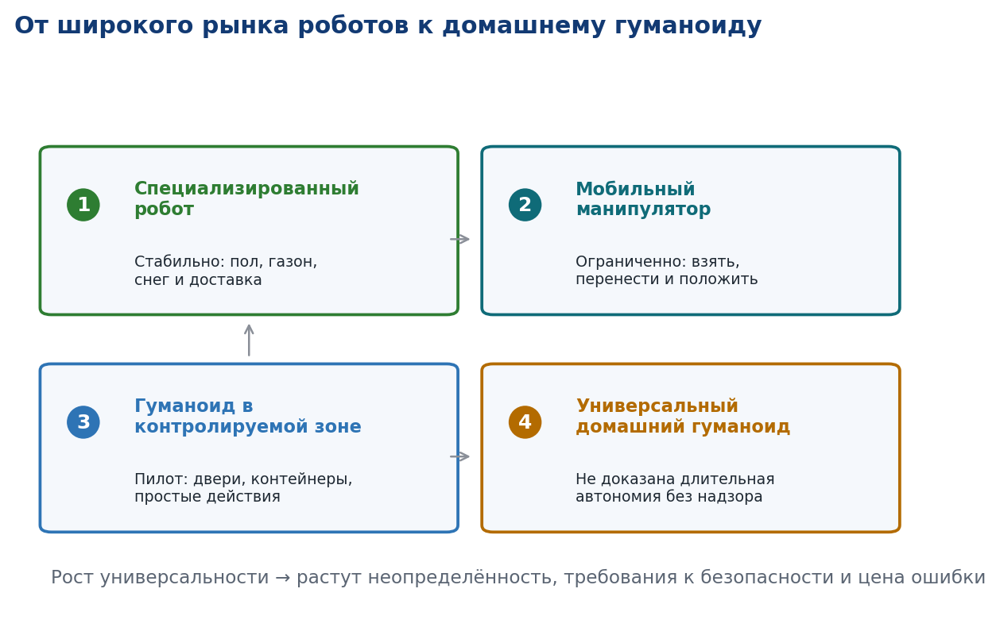
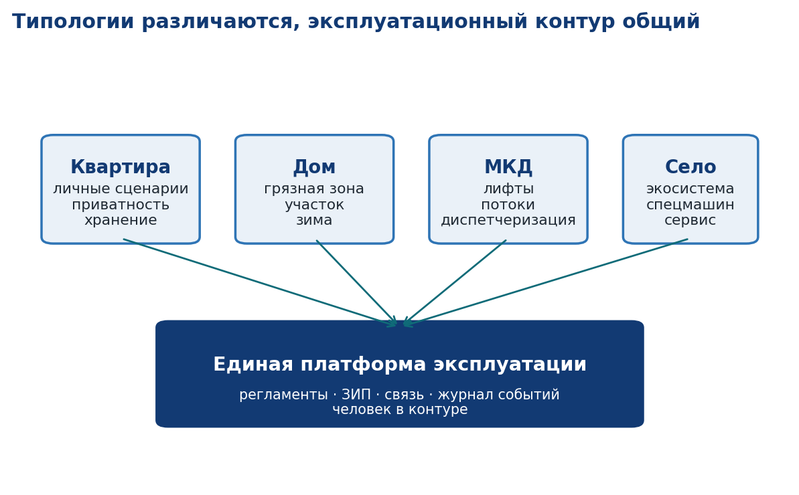

◈
Действующие нормы
Пожарная безопасность, эвакуация, электрика и жилые здания.
ОбязательноПредварительный прототип · 28 августа 2026
Научно-проектная программа РГСУ о безопасной, обратимо адаптируемой и нейтральной к бренду жилой среде для сервисных и гуманоидных роботов.
Научная гипотеза
Безбарьерная геометрия, безопасная зарядка, цифровая инфраструктура и управляемая приватность позволяют внедрять разные типы роботов без дорогой перестройки дома.
02 · Четыре среды
Техническое задание охватывает квартиру, индивидуальный дом, многоквартирный дом и сельскую среду. Для каждой — свой маршрут, сервис и класс рисков.
Проектная логика
Обязательные сценарии
✓ Вход и доставка предмета
✓ Кухня и хозяйственная зона
✓ Гостевой и приватный режим
Обязательные зоны
↳ Док вне эвакуации
↳ Раздельное хранение инструмента
↳ Физический стоп и ручной режим
Проектная логика
Обязательные сценарии
✓ Дом, гараж и участок
✓ Снег, соль и сушка
✓ Отказ вертикальной связи
Обязательные зоны
↳ Грязный входной шлюз
↳ Сервис наружного парка
↳ Геозона и безопасные ворота
Проектная логика
Обязательные сценарии
✓ Гость, посылка и уборка
✓ Доставка до этажа
✓ Инцидент и пожарный режим
Обязательные зоны
↳ Постамат и сервисный вход
↳ Зарядно-сервисная
↳ Карантин и диспетчеризация
Проектная логика
Обязательные сценарии
✓ Газон, снег и грядки
✓ Груз и инспекция
✓ Животные и санитарные маршруты
Обязательные зоны
↳ Мойка и сменный инструмент
↳ Зарядка и хранение
↳ Геозона и ручной резерв
03 · Архитектура требований
Каждое решение получает статус. Это защищает проект от неподтверждённых обещаний и сразу определяет способ приёмки.
Пожарная безопасность, эвакуация, электрика и жилые здания.
ОбязательноБезбарьерная среда, умный дом, сервисные роботы и кибербезопасность.
ОбоснованноМаршруты, док, API лифта, сценарии робота и пространственная приватность.
Испытать
04 · Проверка зрелости
Для дома важен безопасный полный цикл: понимание задачи, выполнение, восстановление после ошибки, обслуживание и понятная ответственность.

05 · Программа исследований РГСУ
Работа разбита на пять проверяемых этапов. Переход выполняется только после контрольного решения и фиксации допущений.
Выбор 2–3 платформ, OEM-вопросник, сценарии и запреты
Три типологии, маршруты, лифт и цифровые интерфейсы
Трансформируемая квартира, вход, коридор и лифт-макет
Навигация, двери, сеть, тревога, приватность и ресурс
Пользователи, сервис, ЗИП и экономическая модель
Макет лаборатории
06 · Предварительный результат
Прототип переводит объёмное техническое задание в понятную цифровую модель: типологии, требования, критерии доказательности и поэтапную программу испытаний.

Следующий управленческий шаг